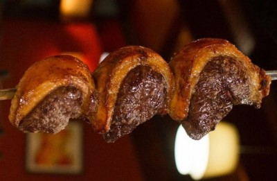

Picanha on the grill

Description
Perfectly Grilled Brazilian Picanha Steak. Grilled either indoors or out.
Ingredients
- 20 ounces of picanha steak
- 1 teaspoon olive oil
- 1 tablespoon meat tenderizer
- 1 teaspoon steak seasoning
- Salt to taste
Steps
- Place steak on a plate and coat lightly with olive oil. Rub steak with meat tenderizer. Sprinkle steak with Canadian steak seasoning and gently rub into steak. Cover with plastic wrap and let stand for 20 minutes.
- Preheat a grill for high heat. When the grill is hot, lightly oil the grate.
- Unwrap steaks and grill on open flame or charcoal grill for 3 to 5 minutes per side, or to your desired degree of doneness.
Return to homepage